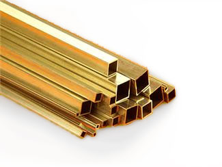
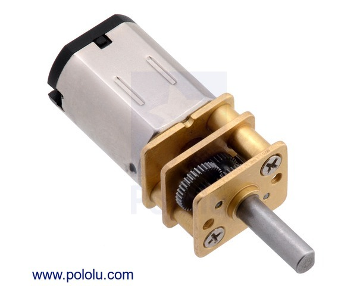
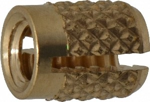
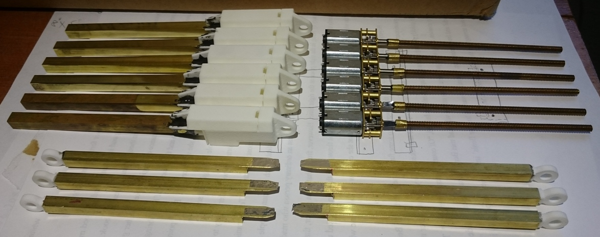
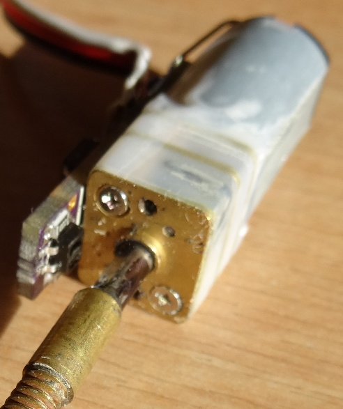

The desire for a miniature linear actuator manifested from the design for another project, a sun tracker that was never built. A few prototype electric linear actuators were made at first for the original solar tracker project, but the linear servo design quickly became it's own full project.
Project Design Goals
To build a linear servo, with an electrical control interface identical to that used in standard rotational hobby servo motors, in a small, low-power format at low cost, with ease of manufacturing suitable to small-scale home production.
Mechanical Design
I settled upon 6-32 nut and threaded rod for translating rotation from a motor to linear movement. Without a ball thread there is significant friction, however that friction was deemed acceptable for the low-cost, miniature design envelope. A threaded rod shaft is coupled using a collar and epoxy onto a micro gearmotor, of a standard format for easy sourcing and a flexible gear ratio. The actuator's piston rod and housing are commonly available square brass telescoping tubing, 1/4" OD for the housing and 7/32" OD for the piston rod. A press-fit threaded insert, secured with a bit of epoxy, serves as the actuator's nut inside the piston rod tubing. To complete the body, 3D printed casing connects to the brass housing and the gear motor, as well as providing mounting points for clevises on both ends of the linear actuator. Rounded out, the linear servo can extend from six to nine inches with configurable speed and force, depending on the micro gearmotor chosen. Some of the COTS components used:

Square brass tubing from K&S

Micro metal gearmotor

Threaded insert, image from mscdirect.com
Linear servo in assembly:

Small scale production of six linear servos
Actuator electronics and control
The linear servo connects via a three pin header identical to those on hobby servo motors, and interprets a PWM signal with pulses 1ms to 2ms wide as a percent of extension. The electronics also must get feedback about the position of the piston rod. Thanks to the friction of a 6-32 threaded rod, back drive is impossible so only a single channel optical encoder is needed for feedback, and the ATtiny 25 MCU that controls the linear servo can use it's flash memory to keep track of the piston rod's position. The encoder is custom built, and is integrated tightly into the electrical and mechanical design allowing for it to also serve as a limit switch for detecting piston rod end of travel (only at contracted extreme) at a low component cost. The ATtiny MCU directly monitors a photosensor to complete the encoder system, and combines that with the control pwm to decide an output for the H-bridge motor controller. The entire circuit is fit on a small board that fits inside the printed case, flat against one side of the gearmotor.

IR photosensor on circuit board faces motor shaft to detect flat spot